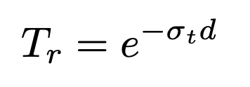

Through this project, our goal was to render the Tyndall Effect by shooting a ray through a volumetrically rendered medium. We approached the problem by first rendering both homogenous and heterogenous fog. We implemented raymarching where we had to account for the probabilities of absorption, scattering, and transmittance for each step. As for heterogenous fog, we implemented a Perlin Noise to vary the densities when traveling through the medium.
We built upon the ray tracer code from Project 3 as the underlying framework for our project. Initially, our approach to implementing homogenous fog, as suggested by Goodman, involved calculating a distance by selecting a uniform random number, ε, within the range [0, 1]. This value was then used to determine the time, t, which we interpreted as indicating either a surface or medium intersection. However, we encountered difficulties integrating this method with our existing ray tracing code. As a result, we opted for a different strategy based on ray marching.
As we know that rays that pass through a medium lose energy due to absorption and out-scattering and gain energy due to in-scattering. We represent the scattering interaction through σs and the absorption interaction through σa. Beer-Lambert's Law (shown below) gives us the attenuation of the light traveling through some distance d where σt = σs + σa. As we are only dealing with homogenous mediums for now, the density term is constant. Just like how we use BSDFs for surface interactions, for media interactions we use a Phase Function since the outgoing direction can now be scattered in all directions vs just the hemisphere of directions in surface interactions. For isotropic volumes the phase function is simple as We decided to use the Henyey-Greenstein Phase function that is parameterized by The summed up idea behind raymarching is as follows: For a certain number of steps, we march the ray and for each step we 1. Calculate the fraction of light that is not absorbed or out-scattered traveling through the segment of the medium being our set step size 2. Update the transmission 3. Calculate the in-scattering contribution by sampling the light and calculate the attentuation the light ray travels to the point and update the running total.
